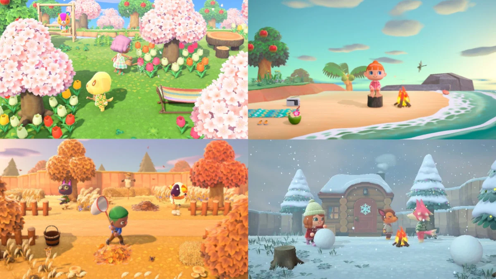
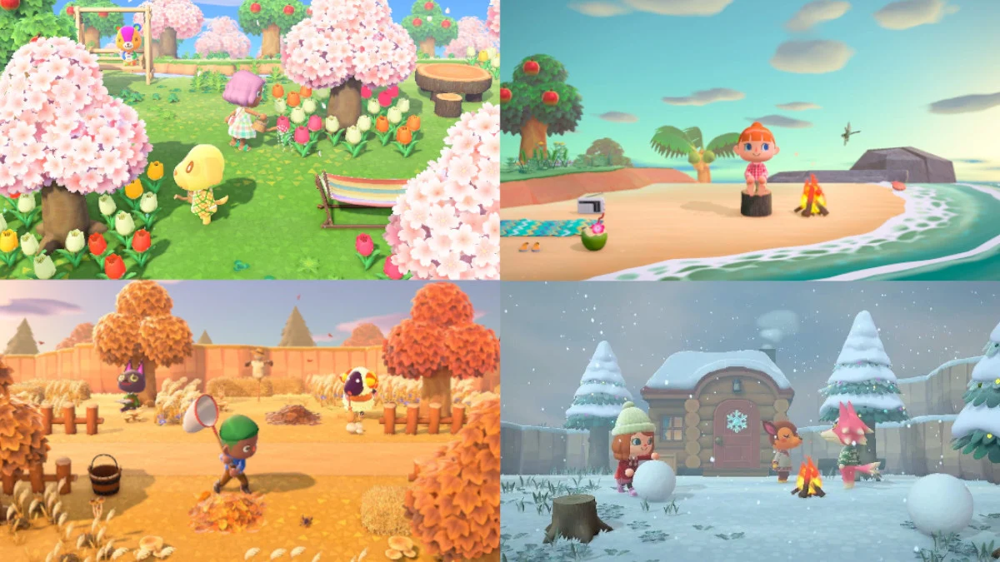
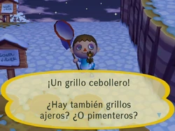
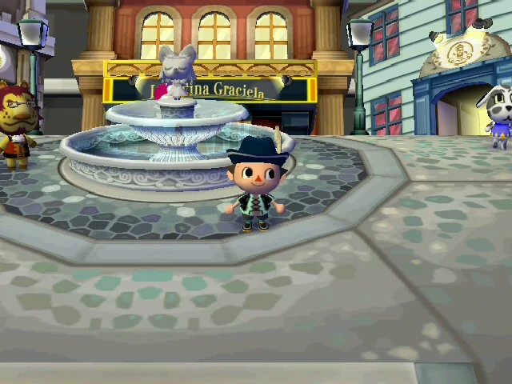

Bienvenidos a mejores comentarios de videojuegos.
NINTENDO
Animal Crossing
| Juego | Año de lanzamiento | Consola | Valoración |
|---|---|---|---|
| Animal Crossing | 2004 | GameCube | 9 |
| Animal Crossing: Wild World | 2006 | DS | 9.2 |
| Animal Crossing: Let's go to the city | 2008 | Wii | 7 |
| Animal Crossing: New Leaf | 2013 | 3DS | 9.3 |
| Animal Crossing: Happy Home Designer | 2015 | 3DS | 8 |
| Animal Crossing: Pocket Camp | 2017 | No consola, para móvil | 7 |
| Animal Crossing: New Horizons | 2020 | Switch | 9 |
 

 
COMENTARIOS
Gonzalo González: WILD WORLD Para su época y consola es un buen juego,
con mecánicas simples y repetitivas de las que es difícil desengancharse,
sin mencionar a los carismáticos personajes y vecinos.El topo es muy molesto
Gráficos típicos de una DS pero sin restarles importancia. Música agradable (temazos)
que no dejarás de tararear. Le doy un 7.5
María José R.:New HorizonsAnimal Crossing: New Horizons es, sin duda alguna,
la entrega más completa de toda la saga. El salto respecto a sus predecesores en
cuanto a personalización y opciones es abrumador, está repleto de novedades y el
giro que se le ha dado a su planteamiento nos ha parecido todo un acierto,
dándole mucha frescura a la fórmula pero sin traicionar su esencia. O dicho de otro
modo: preparad vuestras maletas, pues vuestra nueva y paradisíaca vida está a punto
de empezar. Mención especial a la belleza de las flores
Ver más juegos de Nintendo.
Volver a página principal.